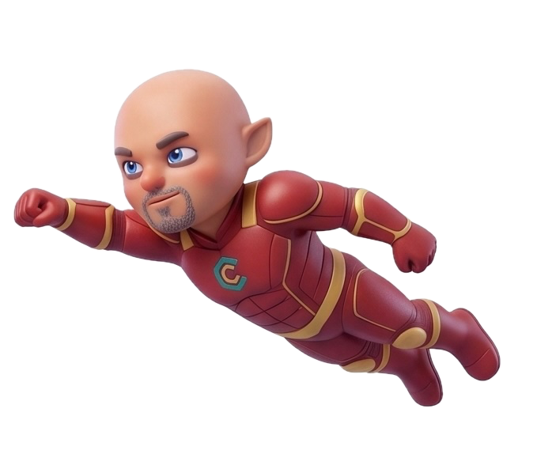
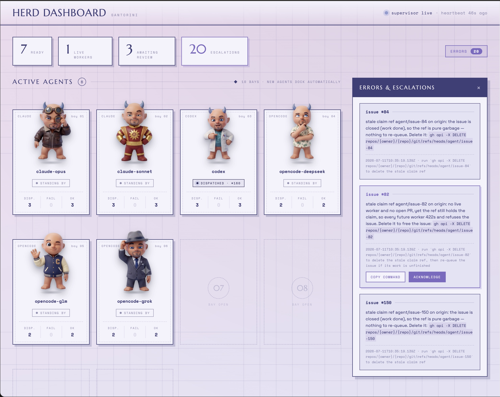

Ideate
Shape the idea with your LLM until it is solid.
v5.1.0 · MIT · GitHub-native
Ratchet turns any GitHub repo into a continuous delivery loop run by coding agents — Claude Code, Codex, and Antigravity. Work only moves toward shipped.
You do two jobs: write plan files and review PRs.

curl -fsSL https://raw.githubusercontent.com/praveenvijayan/Ratchet/v5.1.0/scripts/bootstrap.sh | bash -s -- --version v5.1.0/ 01 WHY RATCHET

Without Ratchet
× Agent sessions stall, lose context, or silently abandon work
× Backlog lives in your head; agents re-derive everything each run
× Failures slip backward — half-done branches, forgotten issues
× Every tool needs its own orchestration setup
With Ratchet
+ Every failure path returns work to the queue — nothing gets silently stuck
+ Plans compile to GitHub issues; state lives in labels, branches, and PRs
+ Atomic claims prevent two agents grabbing the same issue
+ No orchestrator, no database, no custom service
Humans own two things: writing good plan files and reviewing PRs. Everything else ratchets forward on its own.
/ 02 THE LOOP
Every failure path returns to the queue.
Shape the idea with your LLM until it is solid.
/ratchet-plan writes plan/*.md and opens a planning PR.
plan-sync compiles plan files into GitHub issues on main.
The agent claims, builds, verifies, and opens a PR.
A human reviews and merges. GitHub closes the issue.
Dependents unblock; stale claims return to the queue.
The backlog drains. New findings become new plan files.
/ 03 THE SYSTEM
No orchestrator, no database, no service to host. The protocol is issues, labels, branches, Actions, and PRs.
AGENTS.md is the shared operating manual. Claude Code, Codex, and Antigravity run the same loop.
Agents claim issues with a server-side branch ref (agent/issue-N). A 422 means someone else got there first.
You define pass/fail gates in GATES.md. Agents verify fail-fast before opening a PR.
Work moves toward shipped or returns to the queue. Stale claims get swept; blocked issues unblock automatically.
The agent proposes memory edits inside its PR — memory changes are reviewed like code, never written silently.
/ 04 MEMORY
Three tiers, all GitHub-native. No vector DB, no external service.
The agent reads tiers 1–2 every issue, searches tier 3 when context is missing, and never edits USER.md.
Acceptance criteria and current context, close to the work.
USER.md · human-owned preferences
ARCHITECTURE.md · generated codebase map
MEMORY.md · distilled knowledge cache
Closed issues, merged PRs, git log, and plan files — unbounded, searched on demand.
/ 05 SKILLS REFERENCE
/ratchet-initOne-time setup: labels, gate detection, memory scaffold, PAT check/ratchet-planIdea → plan/*.md on the planning branch/ratchet-syncCompile plan files → issues now/ratchet-nextAdvance after merge, or rework after review/ratchet-statusWhy is nothing ready, and what to do/ratchet-metricsLoop health: cycle time, rework, queue depth/ratchet-memoryPrune and dedupe MEMORY.md/ratchet-mapRegenerate the codebase map/ratchet-updatePull a newer framework version — project files untouched/ratchet-uninstallCleanly remove Ratchet; keep your data by defaultRunning many issues at once? ratchet-herd (node scripts/herd.mjs run) supervises one agent per ready issue, watched to a PR. It never merges or reviews — anything it cannot resolve escalates to a human.
/ 06 INSTALL
Run from inside your project's git repo.
curl -fsSL https://raw.githubusercontent.com/praveenvijayan/Ratchet/v5.1.0/scripts/bootstrap.sh -o bootstrap.sh
less bootstrap.sh # read it before you run it
bash bootstrap.sh --version v5.1.0 --profile core./setup.sh/ratchet-init--dry-run previews changes without writing. --force is required to overwrite an existing file. The installer reads ratchet-manifest.json and never touches .env or local secrets.
/ 07 THE PAT
GitHub's default token cannot trigger one workflow from another's events, so automated issue closes would stall the loop. Set a fine-grained PAT as the FACTORY_PAT repo secret. With pure human merges the fallback token works; the PAT makes it bulletproof.
/ratchet-init checks this and guides you. Never commit a real token — .env is gitignored; only .env.example ships.
/ 08 OPTIONAL
Human involvement ends at the merge.
gh variable set RATCHET_AUTO --body true
gh secret set ANTHROPIC_API_KEY # or swap to Codex
gh workflow run ratchet-runEvery merge triggers ratchet-run: it checks out fresh main, picks the top ready issue, and works it to a PR. You merge; it advances.
Safe by default — without RATCHET_AUTO=true the workflow no-ops. Mind the cost: each run spends API tokens.
/ 09 FAQ
READY TO START?
Install Ratchet, write a plan, merge PRs. The backlog drains itself.
curl -fsSL https://raw.githubusercontent.com/praveenvijayan/Ratchet/v5.1.0/scripts/bootstrap.sh | bash -s -- --version v5.1.0